The Tempestuous Charmer: A Review of Erin Hills
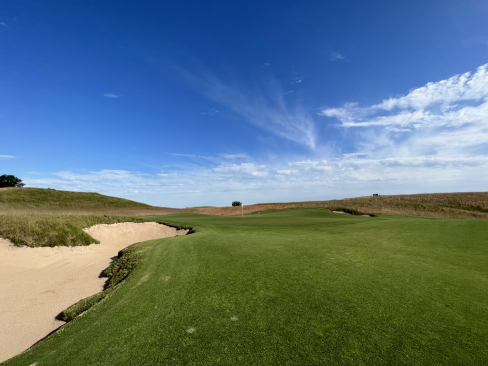
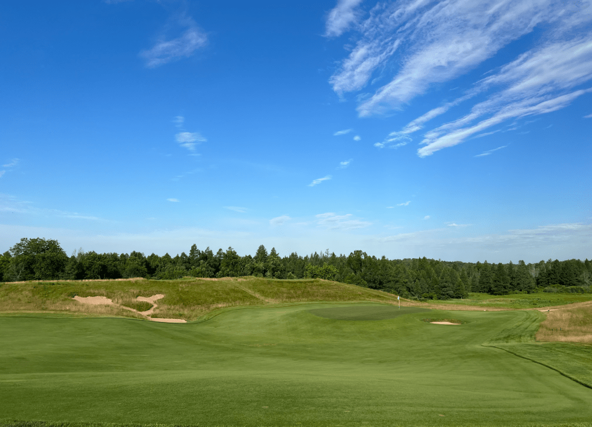
There are few negative feelings to have against Erin Hills. Though chaos and turnover have covered its history, the layout and design of the course remain engrossing.
Erin Hills is blessed with a remarkable piece of land, and many holes successfully exploit the many uncultivated opportunities. The natural undulations of the land are consistently highlighted throughout the course, and the green sites and rolling fairways are innocent of large-scale construction work. Wind-swept fescue grasses envelop the ground between holes, exposing the massive ridges and hills of the property. Perhaps the greatest enjoyment at Erin Hills is found in the brief glimpses of the dunes across the ocean, and the course’s marketing team has exploited this phenomenon to the fullest extent.
As golfers drive through the entrance and main road into the course, the mammoth scale of the property is realized. In an apparent dichotomy, the surrounding atmosphere carries a casual character. The literal caddie barn, the unassuming clubhouse, and the quaint cottages all contribute to this amiable ambiance. A recurring duality exists throughout Erin Hills in this manner — the course is formidable yet friendly, gigantic yet gracious, and herculean while hospitable.
The Opener
The first is an unfortunate victim within the routing, traveling alongside a marsh from tee to green. No other hole features a hazard as immediate as the wetland on the first, which leaves an unfortunate stain on an otherwise intriguing hole. Nonetheless, many elements throughout this opening par-five give a proper introduction to the appearance and style of the course.
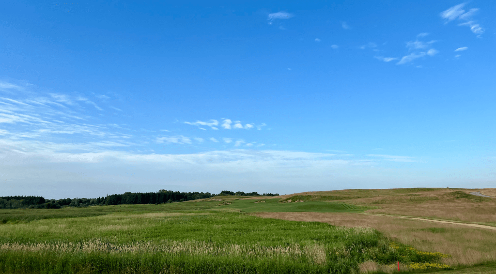
The opening tee shot traverses the only marsh hazard on the property
For example, a beautiful blow-out bunker tucked into the hillside right of the fairway is a welcome introduction to the natural aesthetic and challenge of the bunkers across the course. The vast area of short grass around the green also imparts an appropriate start to the vast variety of shots to be played around the greens. Texas wedges, bump-and-runs, and flop shots all entice players with numerous options for recovery.
Of special notice is that golfers will not lose an excessive number of balls at Erin Hills (excluding the late summer months and subsequent tall fescue). This endearing attribute makes for thrilling recovery shots across the course. If players are out of position, the greens and surrounding undulations will inherently penalize these misses. How much more engaging it is for players to have the prospect of recovery than to drop a new ball!
The First Memorable (Second) Hole
The second is in the company of the most heralded holes on the course. A blind tee shot presents many options for players to consider, many of which are dependent on the wind. Long hitters can receive considerable roll if the ball lands next to the right-side fairway bunkers, but a miss short right will fail to carry the bunkers. Additionally, a long left miss might find the deep bunker trenched into the hillside left of the green, which players should be advised to avoid.
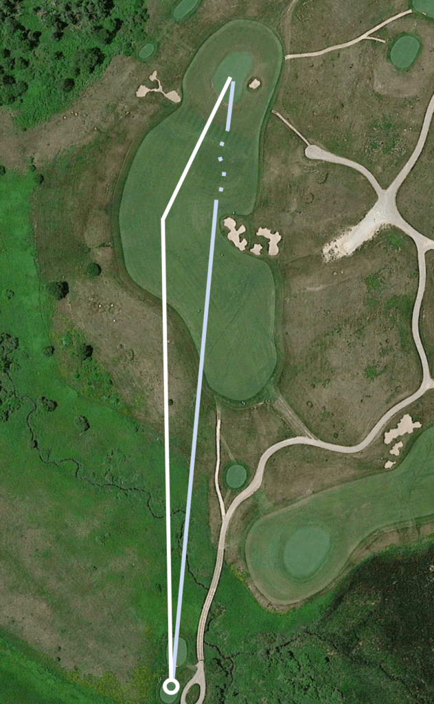
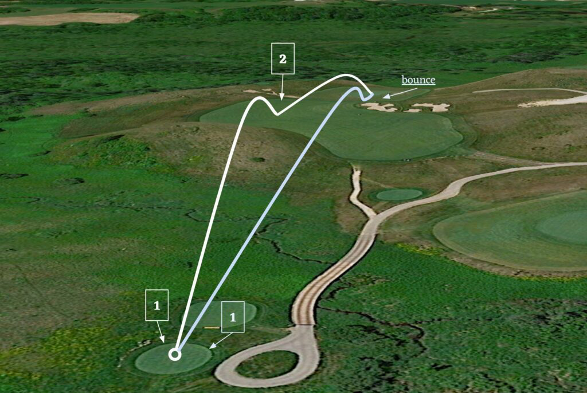
Above: The typical strategic lines of play for long and short hitters. Those that successfully challenge the fairway bunkers off the tee will receive a healthy roll down towards the green. (courtesy Google Earth)
For shorter hitters, an open approach to a tiny green surface is the reward of a successful tee shot over the hill to the blind fairway. The green is the smallest on the course, as it is crowned on all sides with a pot bunker on the right.
Questionable Facelifts and Centerline Bunkers
The third and fourth holes are similar in arrangement — both feature downhill tee shots to canted fairways as well as uphill approaches to shallow greens with fronting centerline bunkers and runoff behind. Quite the resemblance!
Both holes underwent significant changes during 2010 renovations headed by a new owner. (For more information on the labyrinthine history of Erin Hills, read this fantastic series.) The 4th green was previously located in a natural punchbowl, and though it likely was a more compelling green than the current, the associated drainage issues proved problematic enough to move it. The green on the 5th was also repositioned and recontoured.
These changes sadly made each hole less unique. Modifications in green position and mowing lines also resulted in three consecutive holes with skinny centerline bunkers in front of the greens. On an individual basis, each hole is enhanced by these bunkers. However, due to their subsequent consecutive nature, the diversity of the opening stretch is underwhelming.
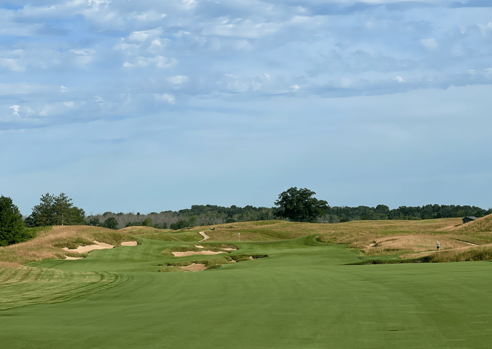
The intimidating approach to the 4th green
In addition, various trees were once scattered right of the 3rd and 4th, which provided a natural transition from the densely forested hazard to the open prairie of the property. These trees have long been removed, and the present contrast between the hazard and the course is somewhat peculiar.
Nevertheless, the holes are not without merit. For example, the fourth green has a variety of potential pin placements with its vexing interior and surrounding contours. Coupled with the dramatic movement of the fairway, players will often face approaches from sidehill lies to these difficult pins. Let it be known these holes are not without interest!
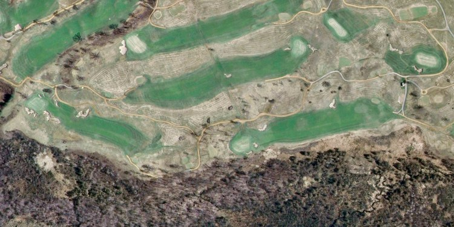
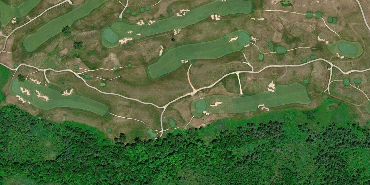
A comparison of holes 3-7 from 2007 and 2015. The forgone “Dell” sits in the upper right of the image (courtesy Google Earth)
As players take the long walk to the fifth tee, the magnificence of the property’s topography begins to unfold. The fifth and sixth holes both boast beautiful gentle green sites. Gentle in composition, the quasi-punchbowl 5th green sits beautifully in front of a ridge, while the sixth straddles a saddle feature and deceives its deep length from the tee. This stretch of holes is noticeably natural and shaped in consideration of its subtle landforms.
The Deceased “Dell“
During the first few years of Erin Hills’ existence, golfers played consecutive par threes at the sixth and the seventh. The former seventh, known as “The Dell” for its features akin to the 5th at Lahinch, featured a blind tee shot into a punchbowl green. To the delight and devastation of many, the hole was nixed from the routing in 2010. Today, golfers walk straight to the par-five eighth (now seventh) after exiting the sixth.
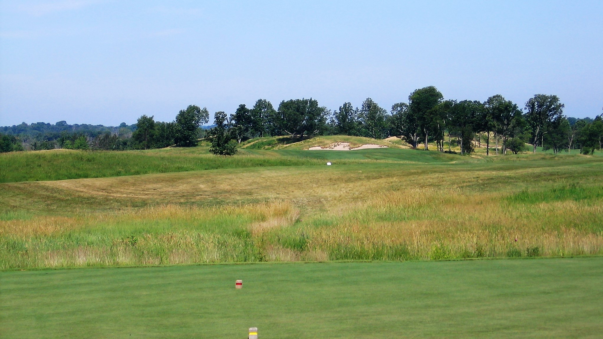
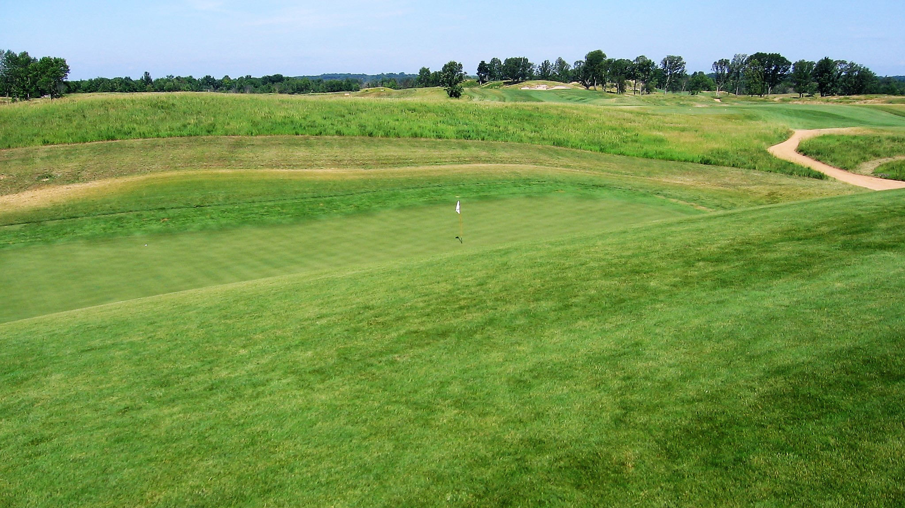
A view of the Dell in 2007 (credit: John Griffin)
An Indelible Stretch Commences
The seventh heads back to a green positioned on the same ridge that the 4th green and 5th tee sit on — this sets up the memorable tee shot on the eighth. The hole allows players to carry a large hill on the left for a shorter approach into the green, heavily protected by three bunkers in front. The further one strays from the hill, the longer and tougher their required carry over the bunkers into the green.
Approaches short of the green will result in one of the more hilarious and embarrassing results in the round, as one watches his ball roll 40 yards down the hill. However, those that stay long will employ the generous backstop behind the green. This hole is brilliant in its design, and its risk/reward disposition concocts a fascinating test from tee to green.
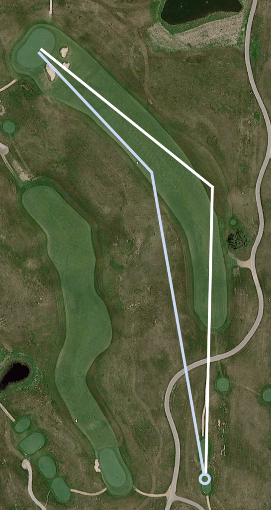
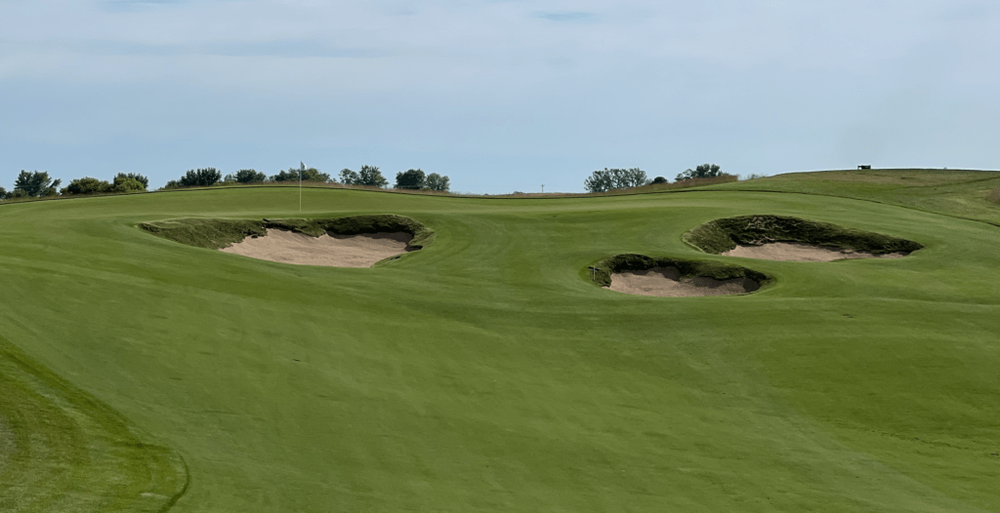
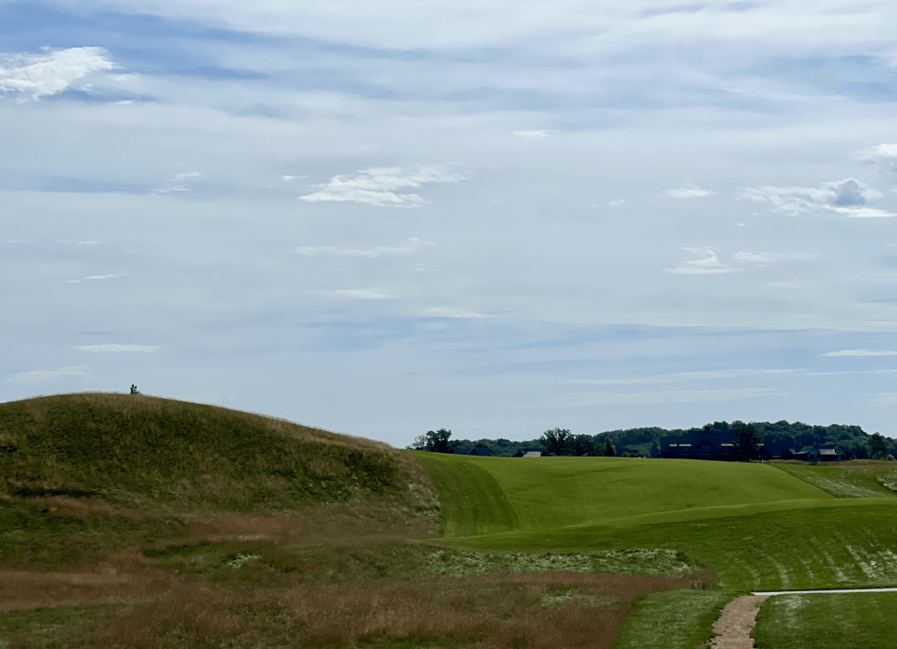
Continuing the run of impressive holes, the ninth boasts a short downhill par 3 heavily protected by the nastiest bunkers on property. Originally named the “bye” hole, it was originally used as the 19th hole for tiebreakers. However, after the aforementioned “Dell” was bulldozed, the current 9th found its home in the routing. Players should aim for the center of the green, as missing any part of the green may live up to the local mantra naming this hole the “shortest par 5 in golf.” Erin Hills treats bunkers as a real hazard, which is incredibly refreshing.
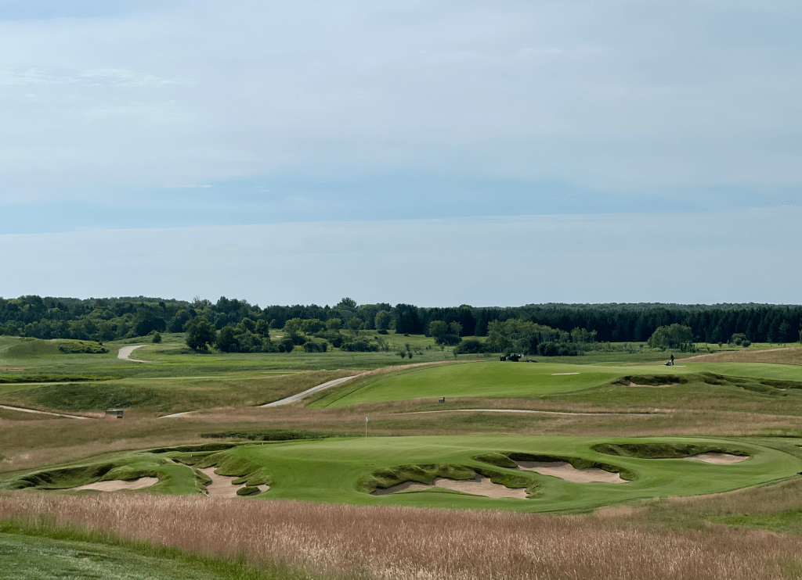
A view from the tee of the devilish 9th green complex
An Overlooked Gem
The Tenth is a spectacular example of a hole that offers different routes of play for players of all skill levels. On the blind tee shot, players that find the right side of the fairway will gain extra distance off a large downslope, despite an inferior angle to those on the left. The hole is brilliantly designed to accommodate the slope of the fairway and prevailing summer wind, as the green is unobstructed on left and narrows into a back-right funnel. For those with a natural fade in their swing, this approach is sure to fit their eye. Players that forgo flying the front green-side bunkers can take advantage of the expanse of short grass left of the green. This area offers a considerable chance for recovery, with a simple pitch uphill into the slope of the green.
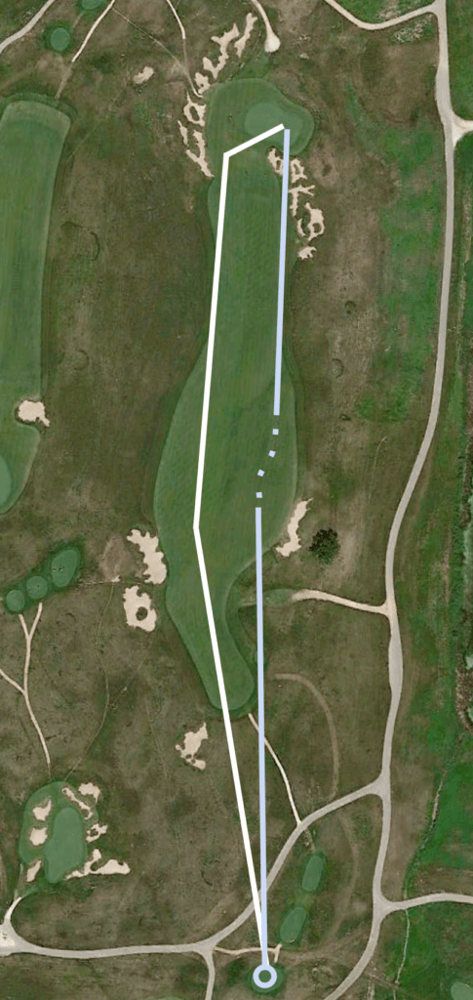
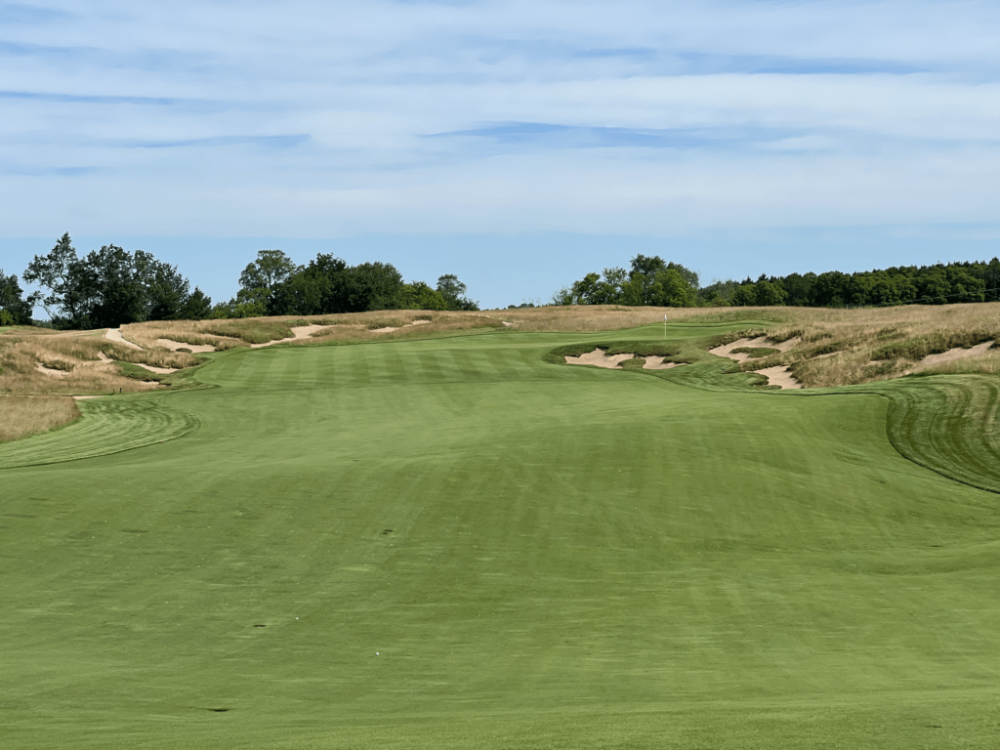
Both the 11th and 12th holes traverse gorgeous natural ground. The green complex of the 11th is nestled in front of a ridge and features a large slope on the left side of the green. Depending on where players are situated after their tee shot, this slope can be used in many different fashions.
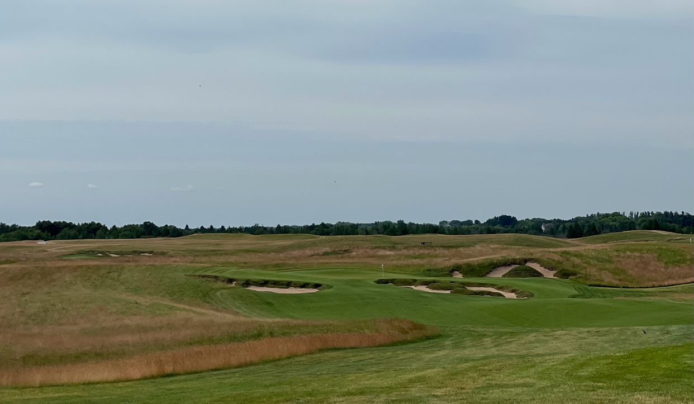
The subtle shaping and strategic options of the 11th never disappoint.
A Climax Observed
The crescendo of the previous holes all builds to the climactic point of the twelfth. The fairway tumbles over the same enormous ridge encountered at the Eighth, and its routing makes for an exciting and eccentric hole. Though the “Irish” advertising of Erin Hills often seems forced and contrived, the twelfth presents the closest embodiment of Irish links of all the holes on the course, and potentially in all of America. Both a mental and physical challenge, the hole forces the player to pick a line, stick to it, and survive the bizarre double-dogleg fairway. A green shaped on a gentle saddle feature awaits downhill approaches from the uneven lies on the fairway — this encourages run-up shots to bound down the fairway and roll onto the green. It is indeed an unforgettable hole.
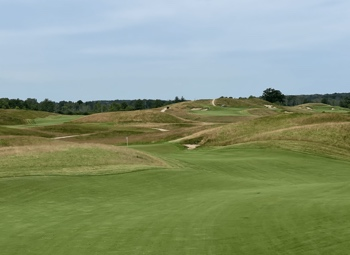
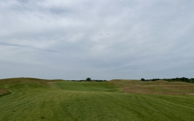
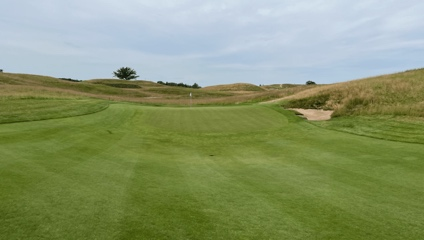
The First of the Finishing Stretch
After the mid-length par three, the par five fourteenth begins the string of closing holes with captivating strategic questions. Perched on a ridge, the wild and attractive green has a steep false front around the front right, with mounding left of the hole. Though a backstop provides aid for those who attempt to reach the green in two, the left-to-right contouring makes approaches from the left side of the fairway extremely difficult. For players that choose to lay up, the principle of “delayed penalty” will certainly affect their third, as a blind shot over the mounding left of the green will certainly test their grit. Watching the ball slowly roll off and down the 20-foot-deep false front is always a tumultuous circumstance.
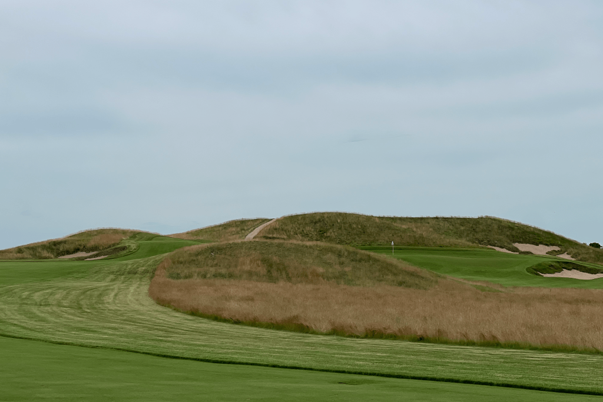
The wild and rambunctious green of the 14th
Turning the Corner
If there was a hole truly distinctive to Erin Hills, most would choose the picturesque 15th. Tucked into the west corner of the property, this short par-4 plays from the top of a ridge to the top of another. The fairway is littered with deep bunkers players must be careful to avoid on the tee shot. Depending on the tee and pin position, the hole has a multitude of different settings in which it can be played. If the pin is placed in the small bowl on the left side of the green, the hole plays much easier than a pin sitting on the right edge. Additionally, if the tees are moved up, players must consider their options carefully, as there are many terrible places the ball can end up throughout the hole.
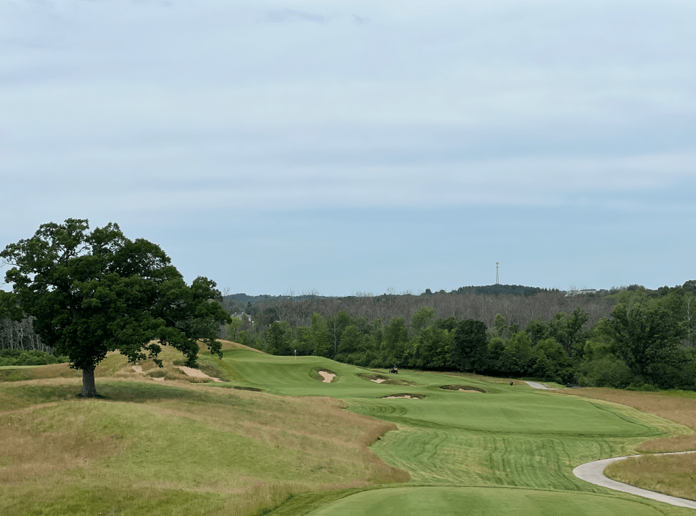
The tee shot on the 15th
As players head back to the clubhouse, they begin the final three holes with a mid-length par three. The sixteenth green sits in a small hollow and features a two-tiered green that funnels from back to front. There is something to be said about the gentle fashion in which the green was cut into the landscape, as the hole merely accents the rolling topography around it, rather than overriding and extracting the attention for itself. Modern construction needs more greens like this that mold (instead of mash) with the surrounding landscape.
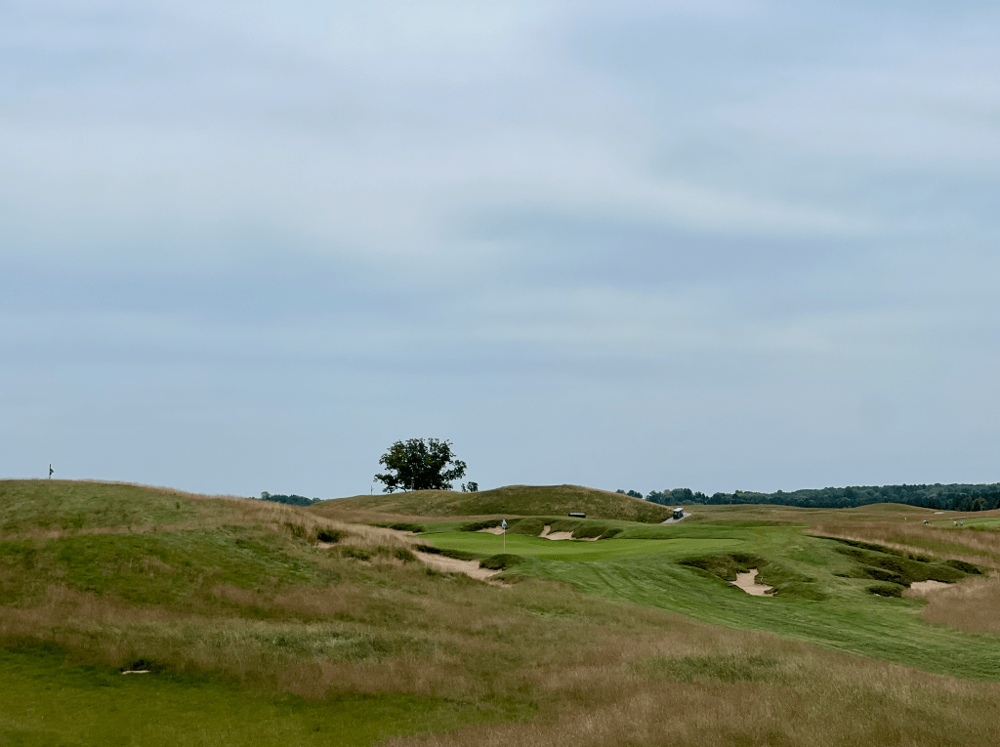
The 16th from the alternate left tee box
The seventeenth has been edited and changed many times since its inception. Architect Tom Doak declares the hole has been “neutered” in his Confidential Guide Vol. 4, and it would be quite interesting to have experienced the hole previously. It is extremely likely that the hole was more interesting than the iteration today.
A Calamitous Conclusion
If a marathon were applied to any singular hole in the midwest, the eighteenth at Erin Hills would be a contender. Both penal and strategic, the 600-yard finisher asks golfers to hit three full shots before arriving on the green. As golfers stare in fear at the large drop-off left of the green, they also might notice the charming Holy Hill in the distance, offering a bit of peace to the calamitous closing hole.
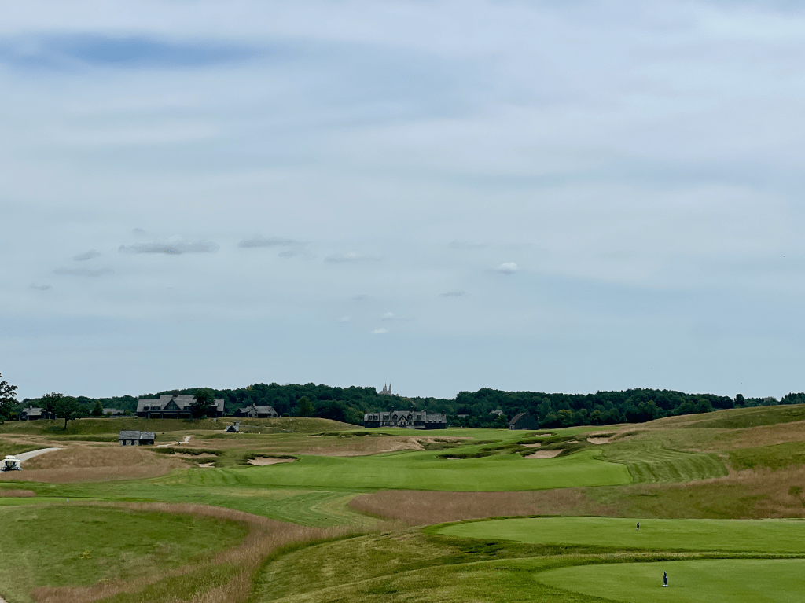
Holy Hill awaits in the far distance 4 miles away. However, by the time one reaches the green, it will only be about 3.5 miles away!
A Note on “Setting”
Erin Hills certainly markets itself as an “Irish links” in aesthetic and appearance. This sentiment is intelligible when one is tucked in the middle of the property. However, on the holes that border the property line, one easily can become distracted by the “real world” outside. As one stands on the 15th tee, the noises of chickens and other animals on a nearby farm might draw his attention. In a comparable fashion, the heavily forested preserve south of the property and marsh wetland on the 1st and 2nd holes all conflict with the Irish paradise visitors are imposed to envision. To add to the contrast, the fairways have all recently been reseeded with bentgrass for maintenance concerns, limiting the potential for firm turf.
It is not necessarily that likening the landforms to Ireland is wrong. Nor that the cacophonies of a nearby farm are inherently disrupting to any round of golf. It is rather that the course and property are made to be something that they are not. Instead of comparisons to established greats overseas to acquire status, Erin Hills would be better served through pride in its unaccompanied merit. Yes, it is a course in the middle of Wisconsin, and it features many characteristics foreign to Irish golf. The course is unique as it is, and should be allowed to speak for itself!
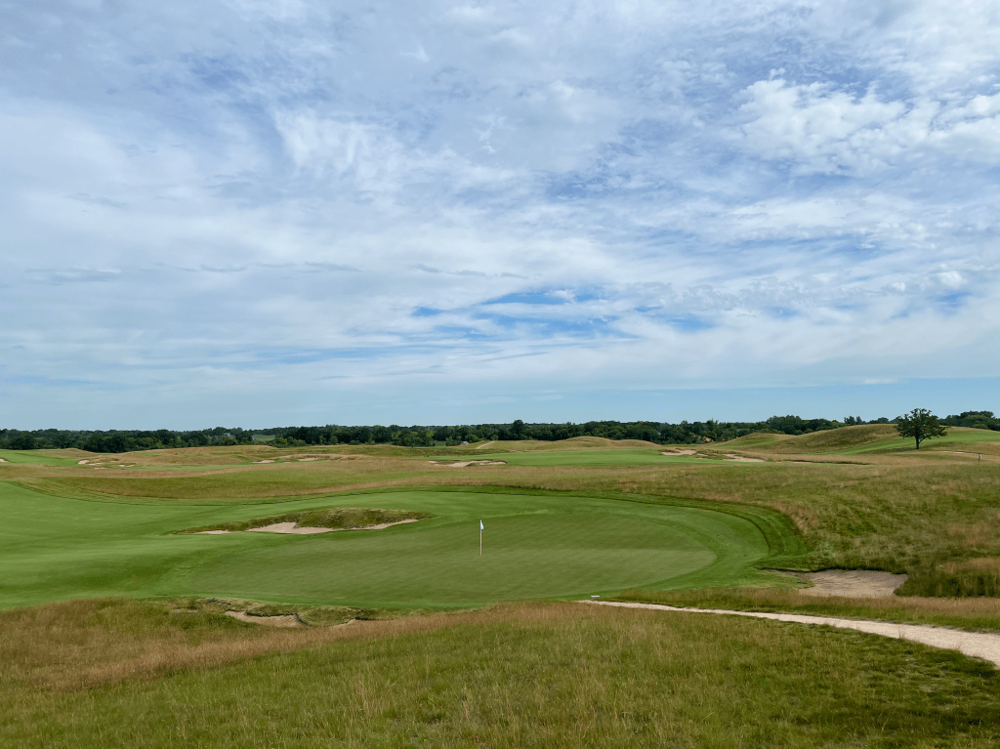
A view of the 5th green and surrounding landscape
An Identity Crisis?
With the exponentially expanding Sand Valley resort and the stronghold of Kohler, Erin Hills exists in a busy crowd of destination golf in Wisconsin. Sand Valley is the architecture aficionado’s paradise, while Kohler is the “Championship Golf” epicenter. So where does Erin Hills fit?
In today’s golf resort landscape, it appears as if courses can’t be in both categories. The saga of Erin Hills occurs to give further evidence to this hypothesis. In conception, the course was sought out to be a natural golf paradise. However, in the pursuit of hosting tournaments, quirky and unique features were nullified or curtailed in the name of “fairness”. Tees were built to stretch to a whopping 8,000 yards, and the ethos of the course was attached to the tournaments it hosted.
In fairness, the pressures and compromises that arrive with a looming major championship are numerous. These must not be overlooked in the story of Erin Hills’ golf course. Given the complications of hosting a U.S. Open in the 21st century, the original layout would never have remained unaltered without the USGA requiring modifications to fit its standards for “fair” golf. And, if Erin Hills had never hosted the tournament, it would have inherited financial circumstances dissimilar to those it faces today.
Obviously, the golf architecture crowd would much prefer many of the original design concepts restored; however, this would be counterintuitive to the course’s current identity as a previous U.S. Open host. The event is certainly to blame for most of the sterilizing changes. Nonetheless, the process added something unalienable to the course’s essence today. And to its credit, the spirit of minimalism is still present in its current form. Erin Hills might never be as good as it could have been, but it will remain a unique story in the golf world. Maybe the course’s identity is best uncovered in the uniqueness of its summative history, and less in each of the multifarious events that shaped its makeup today, for better or for worse.